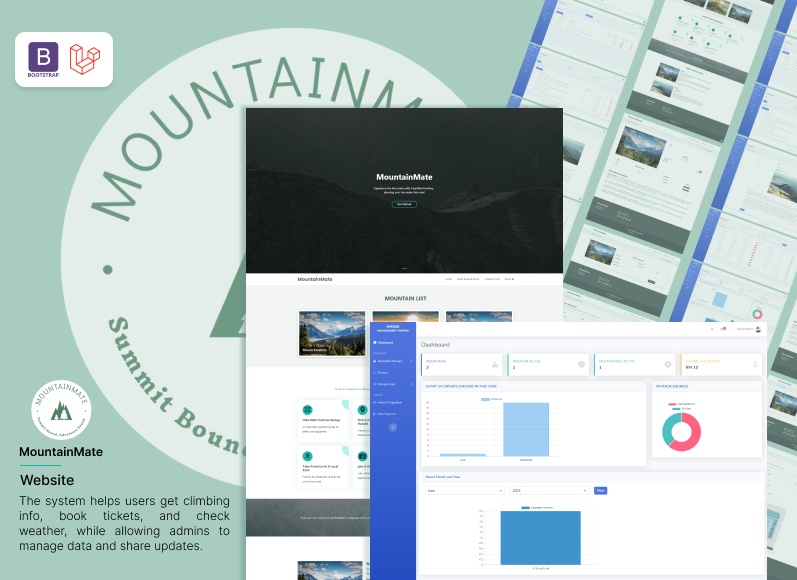
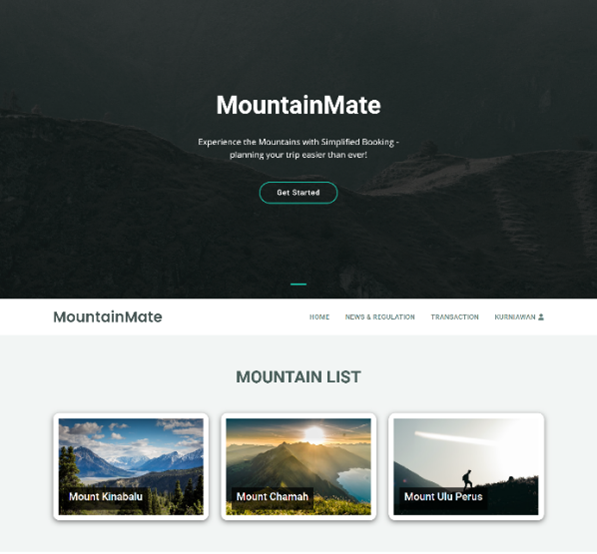
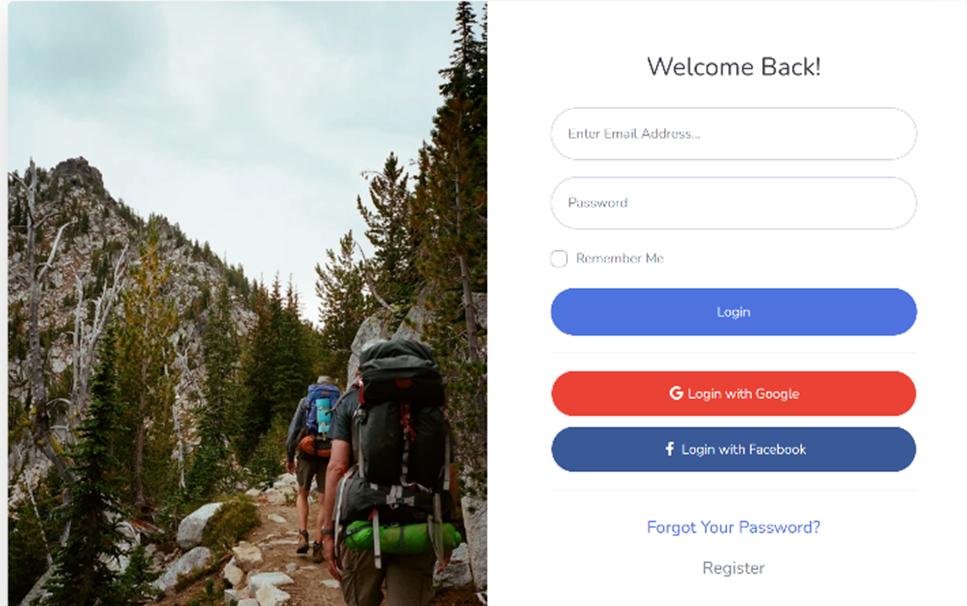
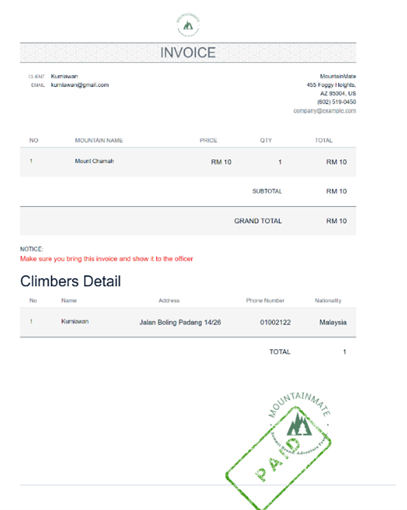

MountainMate : A Web-Based Hiking Management System
 Yoga Pratama
• July 2025
Yoga Pratama
• July 2025
A platform for climbers to access information, book tickets, and track weather, while admins manage data seamlessly.
Disclaimer:This project is a personal case study, developed as my final project during my Bachelor’s degree, and is not affiliated with any company.
Overview
MountainMate was developed as a web-based platform to enhance the hiking experience and streamline administrative processes for climbers and forestry officers. The system provides climbers with convenient access to mountain information, booking services, regulations, and real-time weather conditions. Weather forecasts are automatically retrieved through integration with the Mountain-forecast.com API, allowing users to obtain more accurate and location-specific weather predictions. In addition, administrators can manage climber data, monitor activities, and update mountain availability. This project was implemented using the Agile methodology, ensuring iterative development, flexibility, and continuous stakeholder collaboration to meet the evolving requirements of the system.
Main Objectives
- To create a centralized, efficient, and reliable system for managing hiking activities.
- To facilitate climbers in accessing regulations, booking hiking permits, and receiving real-time weather updates.
- To support forestry administrators in managing mountain lists, climber data, payments, and regulations.
- To improve user experience by providing a simple and interactive website accessible anytime and anywhere
Methodology
The project employed Agile Software Development, which emphasizes flexibility, collaboration, and incremental delivery. The methodology involved several phases:
- Analysis: Examining user needs and correlating data for system design.
- Design: Creating system architecture, interfaces, and use case diagrams collaboratively with stakeholders.
- Development: Breaking down programming tasks into modules and ensuring integration of functions.
- Testing:Conducting unit testing, integration testing, and user acceptance tests to validate system reliability.
- Maintenance:Iteratively refining the system based on user feedback and identified bugs
Website Pages
- Landing Page of the MountainMate website is designed to welcome users with the slogan "Experience the Mountains with Simplified Booking" and a "Get Started" call-to-action button to begin planning. Right below it, users can easily see the list of available mountains in the "Mountain List" section. Additionally, there is a navigation bar at the top that includes important menus such as Home, News & Regulation, and Transaction, which serves to provide quick access to related pages. The overall design of this page effectively presents key information and guides users to explore the site's features further. 
- The login page serves as the main gateway into the system. On this page, users (both administrators and hikers) can enter their credentials to securely authenticate. Once successfully logged in, the system will automatically redirect users to the dashboard or profile page according to their respective access rights. 
- The mountain detail page provides comprehensive information to support users in planning their hikes. When a user selects a mountain image from the landing page, they are directed to a detail page that displays key information such as the mountain’s image, weather forecast, climbing dates, maximum number of climbers, and availability status. The page also includes a short review of the mountain. To check availability, users can refer to the "action" column: if it displays "booking now," the mountain is open for reservations. If the mountain has been deactivated by the administrator, the "booking now" button will change to "not able for now," indicating that the mountain is temporarily unavailable. Figure 4.8 presents an example of the mountain detail page with the "booking now" button.
- The form booking feature enables users to reserve a climbing schedule by completing the required form with accurate details. Alongside the form, the page also displays a brief overview of the selected mountain on the right side, including the mountain’s image and location. After the user fills in the necessary information and clicks the submit button, the system will display a success alert to confirm that the booking has been submitted.
- The invoice feature provides users with a clear overview of their booking status. On this page, users can view detailed information about their order along with its current status. 
- The dashboard adminpage serves as a centralized dashboard that provides administrators with key information and management tools. It features a notification bell that alerts the admin whenever a new transaction occurs, allowing quick access to updates. The page also displays important data, including the total number of mountains, the number of active and inactive mountains, and the earnings for the current month. With these features, the admin page offers comprehensive access to manage transactions and gain valuable insights into mountain management.
- Mountan list admin, feature enables administrators to efficiently manage mountain information within the system. Through this feature, admins can add new mountain data, edit existing records, and delete data when necessary. A search function is also provided to make data retrieval easier and faster. The interface of the mountain list feature is designed to be user-friendly, allowing admins to navigate seamlessly, update information, and maintain accurate records.
- Manage Mountain admin, page provides staff with a simple and structured interface to input new mountain data. Through this page, staff can complete a form with essential details such as the mountain’s name, address, longitude, latitude, image, and description. Accurate input of longitude and latitude is particularly important to ensure the weather forecast displayed is correct. The interface is designed to be user-friendly, guiding staff step by step in adding and managing mountain information effectively.